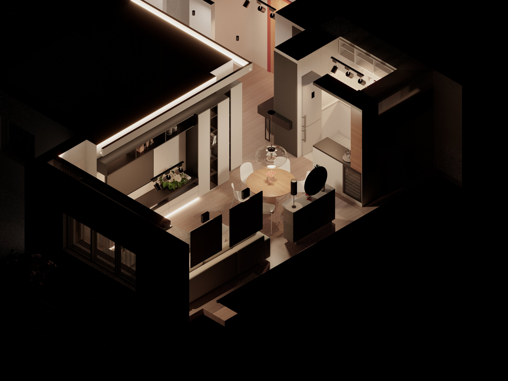
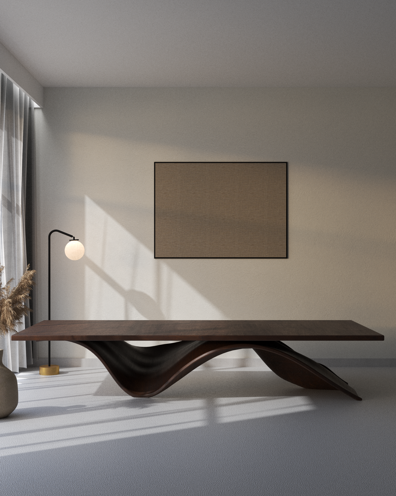
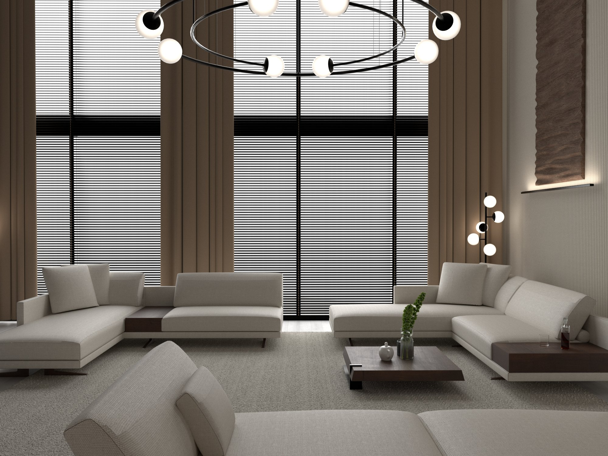

definition of
timeless topology
established 2025
Prostor je atmosfera, esencija duše, toplina koja odzvanja u tišini, a ne samo fizička struktura u kojoj se boravi. Veština projektovanja leži u dubokom razumevanju konteksta, emocije i percepcije čoveka, ali i u nejasnoj granici između fizički opipljivog i unutrašnjeg sveta. Čovek svojom suštinom oblikuje i stvara neponovljivi entitet. Zato je izbor prostora neizostavni deo ciklusa koji definiše čovekov život.
Harmonija je definisana proporcijama, pravilno raspoređenim osama ili, jednostavno, tišinom simetrije. Kroz ritam prirode pretočen u formu, svetlost i zvuk kreira balans između duha i materije, kao i prisustva i praznine. Harmonija se projektuje skladu sa tlom, vetrom, svetlom, senkom, pokretom. Ona određuje odnose - između čoveka i prostora, između materije i etera, između onoga što jeste i onoga što bi moglo biti.
„Architecture is not about designing something new every time. It's about finding the eternal in the
specific.“
- Peter Zumthor
Adaptibilnost prostora je izrazito važan aspekt metodologije projektovanja. Potraga za harmoničnim odnosima
između čoveka, prostora i prirode formira dizajn koji odiše balansom prisustva i praznine, duha i materije.
Svaki projekat je promišljen odgovor na kontekst, prožet osećajem pripadanja, ritma i suštine.
“Topology is not form, but the potential of form — the way in which architecture can be generated by the relationships between spaces, rather than the objects themselves.”
Peter Einsenman

ENTERIJER PO MERI

NAMESTAJ PO MERI

NASE USLUGE